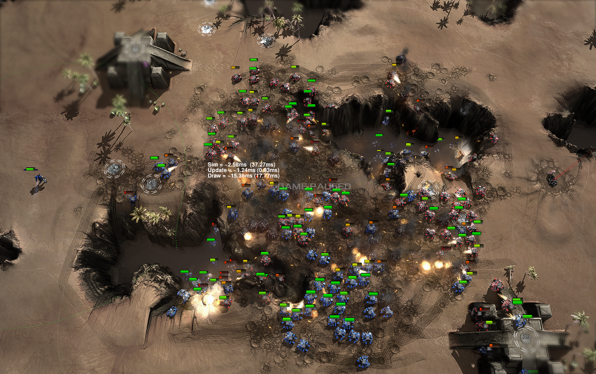
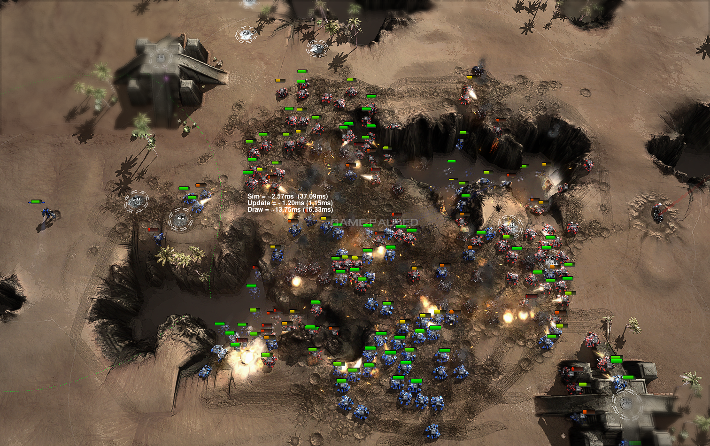

Seths Ravine · Ultra · AA0 · 1512×950. 같은 새 실행 파일에서 G01만 OFF/ON, S01은 양쪽 ON. 각각 3회, 10초 워밍업 뒤 40초 측정.
| 실행 순서 | G01 | 평균 FPS | 1% low FPS | 측정 초 |
|---|---|---|---|---|
| A1_OFF | OFF | 58.6015 | 47.5248 | 39.999 |
| B1_ON | ON | 62.7672 | 54.6219 | 40.005 |
| B2_ON | ON | 62.8296 | 54.8523 | 40.013 |
| A2_OFF | OFF | 58.5604 | 48.5830 | 40.010 |
| A3_OFF | OFF | 58.6073 | 46.8750 | 39.995 |
| B3_ON | ON | 62.8000 | 52.9532 | 40.000 |
6회 모두 유효·정상 종료. 각 40개 구간의 시뮬레이션 프레임·유닛 수·카메라·속도·일시정지 상태가 일치했습니다. 화면 밖/유휴 FPS 감소는 OFF이며 진단·검증·캡처는 껐습니다. 느린 결과를 포함한 6회 전부 사용했고 이전 결과와 섞지 않았습니다.


1% low는 회차별 값 3개의 평균이며 프레임을 합쳐 산출한 값이 아닙니다. FPS는 CPU에서 관찰한 DrawScreen 간격에 근거합니다. 실제 GPU 정점 재사용 횟수는 미측정이며, 이 결과는 위 고정 전투 장면에 한정됩니다. All That Simmers의 결과가 아닙니다.
집계 JSON · 6회 수치 CSV · 동일 조건 대조 · 원본 결과
일부 실행 계획 메타데이터에는 이전 구간 600..1800이 남아 있습니다. 집계에는 6회 모두 실제로 기록된 시뮬레이션 구간 540..1740을 사용했으며 원본 파일은 보존했습니다.
실행 파일 SHA256: 962637cd9a0d71bb66896bedb0b807f2940097ae5cb58c2521eebd93bbb98559